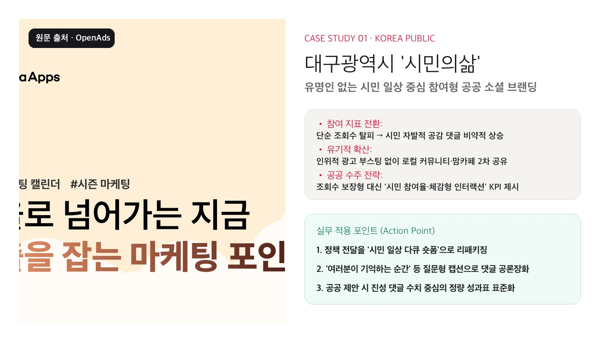
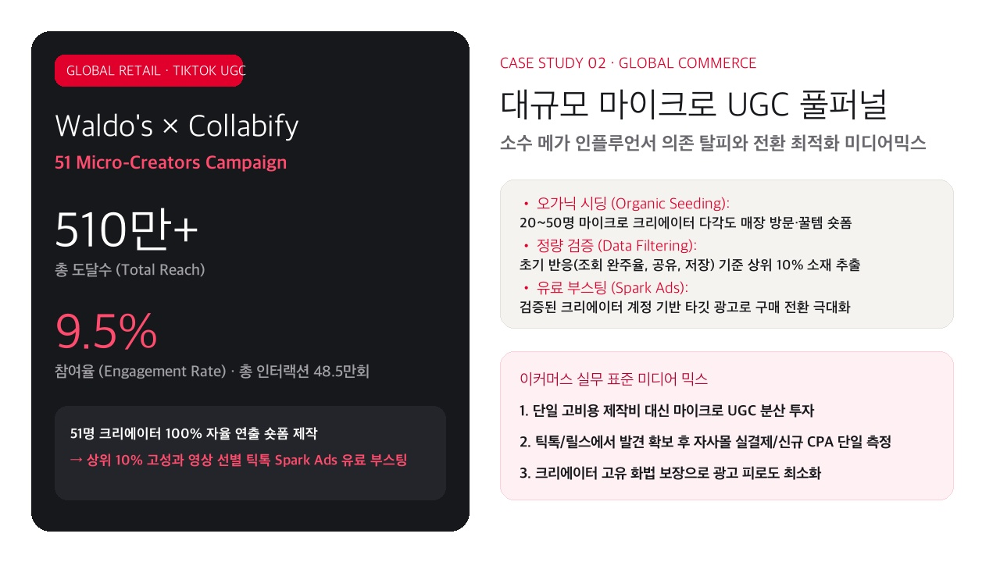
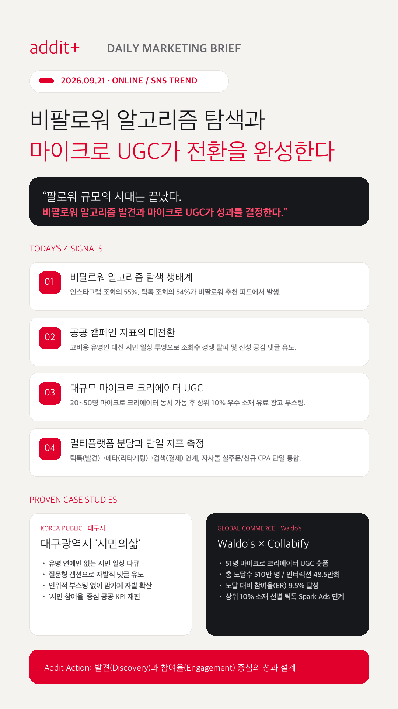

01
비팔로워 중심 알고리즘 탐색(Discovery) 전환
인스타그램 조회의 55%가 비팔로워에서 발생하고, 틱톡 조회의 54%가 추천 피드에서 유입되어 계정 팔로워 수보다 '비팔로워 도달률'이 핵심 척도로 자리잡았습니다.
Dash Social 2026 Report →팔로워 규모의 허상을 벗어나 인스타그램·틱톡 추천 알고리즘의 비팔로워 탐색 생태계를 활용하고, 대규모 마이크로 크리에이터를 통한 풀퍼널 전환 구조를 집중 조명합니다.
인스타그램 조회의 55%가 비팔로워에서 발생하고, 틱톡 조회의 54%가 추천 피드에서 유입되어 계정 팔로워 수보다 '비팔로워 도달률'이 핵심 척도로 자리잡았습니다.
Dash Social 2026 Report →대구시 '시민의삶' 사례처럼 고비용 유명인 대신 시민의 일상 맥락을 투영해 단순 조회수 경쟁을 지양하고 진성 참여 댓글과 2차 자발적 공유를 이끌어냅니다.
오픈애즈 마케팅 분석 원문 →소수 메가 인플루언서 대신 20~50명 마이크로 크리에이터를 동시 가동해 자연스러운 사용 맥락을 확산하고, 반응 검증 소재를 유료 광고(Spark Ads)로 부스팅합니다.
TikTok for Business Inspiration →틱톡(신규 발견) → 인스타그램(리타게팅) → 검색/자사몰(최종 결제)로 채널을 분리하되, 측정은 자사몰 실주문과 신규 고객 확보 단가(CPA)로 단일화합니다.
Linah Farms Multi-platform Case →
원문 카드 이미지 · 오픈애즈유명 연예인 섭외를 탈피하고 실제 시민들의 삶의 현장과 소상공인 이야기를 다큐-숏폼으로 담아냈습니다. 질문형 캡션으로 "기억하는 대구의 순간"을 이끌어내 단순 조회수를 넘어 지역민의 진성 공감 댓글과 맘카페 자발적 확산을 달성한 공공 모범 사례입니다.

원문 카드 이미지 · Collabify/TikTok단일 고비용 제작 대신 51명의 마이크로 크리에이터에게 100% 자율 연출권을 부여해 매장 방문 및 꿀템 숏폼을 제작했습니다. 총 도달 510만 명과 9.5%의 높은 참여율을 달성하고, 상위 10% 영상을 틱톡 Spark Ads로 전환하여 퍼널을 완성했습니다.
인스타그램 조회의 55%가 비팔로워에서 나오는 환경에 맞춰, 주간 보고서에 비팔로워 도달 비중, 저장률, 공유 수를 최우선 KPI로 배치합니다.
Dash Social 리포트 근거 보기 →정책 공지형 콘텐츠를 지양하고, 시민의 일상과 맞닿은 질문과 생활 밀착형 숏폼을 기획해 댓글창을 실시간 공론장이자 커뮤니티로 활성화합니다.
대구시 사례 분석 근거 보기 →20~30개 마이크로 UGC를 유기적으로 테스트한 후 완주율과 참여율이 검증된 상위 소재에만 광고비를 집중 투입해 ROAS와 전환 효율을 극대화합니다.
Collabify 캠페인 근거 보기 →틱톡의 발견, 메타의 리타게팅, 검색의 결제를 유기적으로 결합하되 매체별 자체 보고 대신 자사몰의 순증 매출과 신규 고객 CPA로 성과를 단일화합니다.
Linah Farms 이커머스 근거 보기 →오픈애즈 마케팅 분석 원문 이미지 에셋을 바탕으로 대구시 '시민의삶' 공공 참여형 브랜딩 카드를 구성했습니다.
오픈애즈 원문 확인 →Collabify 공식 플랫폼 및 틱톡 비즈니스 인스피레이션 지표를 기반으로 Waldo's 51개 마이크로 UGC 카드를 제작했습니다.
Collabify 원문 확인 →
소셜 마케팅의 성과는 단순 계정 팔로워 수가 아니라 비팔로워 알고리즘 탐색과 마이크로 UGC를 유기적으로 연결할 때 완성됩니다.